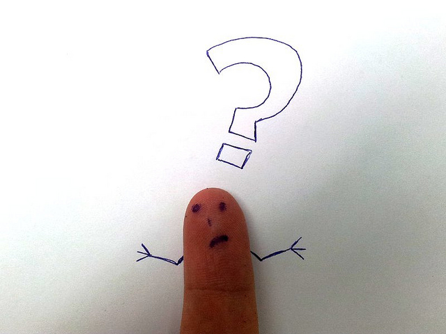
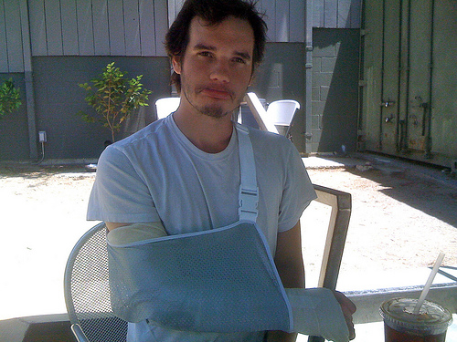

Accesibilidad Web
es pensar en todos
Feria de Ideas - Congreso sobre Democracia - 2016
Pablo Botta
Algunos detalles para que me conozcan un poco mejor...
- Ingeniero en Sistemas de la UTN
- Desarrollador Web (desde el 2008)
- Miembro de STS Rosario.
Coordinador de desarrollo de Carpoolear - Fundador de Movilizame
Accesibilidad Web
La accesibilidad Web significa que personas con algún tipo de discapacidad van a poder hacer uso de la Web. En concreto, al hablar de accesibilidad Web se está haciendo referencia a un diseño Web que va a permitir que estas personas puedan percibir, entender, navegar e interactuar con la Web, aportando a su vez contenidos a la misma.
Analogía para entender la
accesibilidad Web

En nuestro entorno cotidiano (la web) y a pesar de que las personas (usuarios) cuenten con herramientas, tales como una silla de ruedas, para disminuir sus dificultades (tecnologías de apoyo, por ejemplo un lector de pantalla) existen lugares públicos o privados (sitios web) que NO tienen las condiciones para recibirlos (Accesibilidad Web).
Discapacidad en números
Aproximadamente el 15% de la personas en el mundo están afectadas por algún tipo de discapacidad. (13 veces la población Argentina)
En Argentina aproximadamente el 12.7% de la población sufre de algún tipo de discapacidad (5 millones de personas). En 2003 el valor era del 8% se estima a que se debe por el envejecimiento de la población.
Fuente: World Report on Disability 2011 - OMS
Fuente: Censo Nacional de Población, Hogares y Viviendas 2010. INDEC
No solo para desarrolladores
Barreras de accesibilidad
Situaciones que generan que cierto grupo de personas no puedan acceder a un determinado contenido.
- Imágenes sin alternativas textuales: Infografías, gráficos, textos en imágenes. Ejemplo: Gobierno de Santa Fe
- CAPTCHA: Separando humanos de máquinas desde 1998. Ejemplo: ANSES
- Sitios innacesibles mediante teclado. Ejemplo: ANSES
- Sitios carentes de significados.Ejemplo: Municipalidad de Rosario
- Legibilidad de los textos Ejemplo: Gobierno de Santa Fe
La accesibilidad Web NO es una tendencia

Existe la creencia entre los desarrolladores y los dueños de negocio que no existe público beneficiado por la Accesibilidad Web, además que no es tema de gran debate.
Fuente: Google Trends, Net Market Share y Stats Counter
Entnces, ¿por qué debería aplicarla?
Imagen cortesía de Tsahi Levent-Levi
Sus beneficios son para TODOS
Los principios de la accesibilidad forman parte de la Usabilidad y la Experiencia del Usuario.
Su implementación en sitios Web beneficia a todas las personas y no solo a aquellas que tienen un algún tipo de dificultad.
"Discapacitados temporales"
Las estadísticas anteriores no tienen en cuenta que todos podemos quedar temporalmente disminuidos, siendo entonces el número de personas afectadas, en un período de tiempo, aún mayor.
Imagen cortesía de Cameron Parkins
Otros grupos beneficiados directamente
- Personas mayores
- Personas que carezcan de estudios o que no sean nativas en la lengua del sitio Web
- Personas con conexiones lentas o que utilizan tecnologías desactualizadas
- Nuevos usuarios o usuarios infrecuentes del sitio
Fuente: Web Accessibility Web Standards and Regulatory Compliance
Aumenta las conversiones
La aplicación de técnicas de Accesibilidad Web mejora la facilidad de uso, legibilidad y comprensión del contenido en la Web. Ampliando la audiencia para nuestro sitio.
TESCO (cadena multinacional de locales de venta al por menor) aumentó su ganancias en 13 millones de euros anuales incorporando diseño accesible para personas no videntes. [1]
Virgin incremento 68% sus ventas incorporando diseño accesible. [2]
Legal & General aumentó un 300% sus conversiones y disminuyó un 10% su tasa de rebote tras aplicar un nuevo diseño accesible. [3]
[1] 1.1 millon de visitas diarias según Alexa. Fuente: Improve your website’s usability and accessibility to increase sales
[2] 51 mil de visitas diarias según Alexa. Fuente: Improve your website’s usability and accessibility to increase sales
[3] 34 mil visitantes únicos diarios según Alexa. Fuente: Chasing the accessibility business case
Por normativa
En Argentina como en otros países del mundo los sitios Web gubernamentales están obligados a ser accesibles.
La ley de Accesibilidad de la información en las páginas web (n° 26.653) se encuentra en vigencia desde el .
Obligando a los sitios alcanzados (poderes del Estado Nacional, organismos autárquicos o descentralizados, entes públicos, empresas públicas y las empresas privadas contratistas del Estado) a desarollar sus sitios de manera accesible o a adecuar sus sitios actuales a las normativas de Accesibilidad Web Internacionales (WCAG).
Accesibilidad Web en Argentina (sitios gubernamentales)
Pautas de Accesibilidad para el contenido Web
El 98% de los sitios gubernamentales (dominios gob.ar/gov.ar) presentan al menos una barrera de acceso al contenido web..
Estos sitios fallan por lo menos en uno de los criterios de nivel A (los más básicos) propuestos en las pautas WCAG.
Fuente: Accesibilidad Web Gubernamental - 2012Finalmente ...
Para ser un buen tipo

Imagen cortesía de Kelly Sue
Autoevaluación
¿Es el sitio accesible mediante teclado? ¿El focus de los elementos es el esperado? ¿Los atajos del teclado son facilmente predecibles?
¿Es el contenido comprensinble sin imágenes?
¿Necesito tener activado el sonido para poder usar el sitio?
¿El sitio se visualiza correctamente en modo de alto contraste? ¿Existe el contraste suficiente entre los colores de fondo y de fuentes? ¿Necesito distinguir colores para usar el sitio?
Preguntas

Cortesía de Jay Gooby
Gracias
Accesibilidad es pensar en todos
http://bit.ly/accesibilidad-web
Contacto
pabloluisbotta(arroba)gmail.com